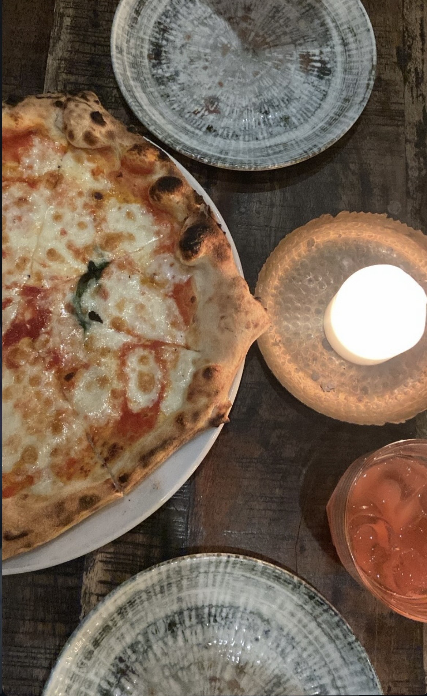
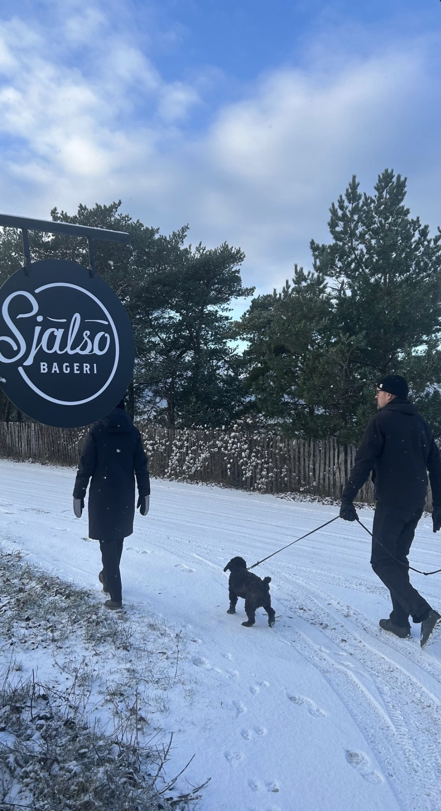

En restaurang i innerstan på Stora torget som serverar fisk och skaldjur. Här rekomenderas att boka bord innan,
för restauranglokalen är liten.
Jag drömmer om deras stekta strömming med hemmalagade potatismos med
persiljasmör ungefär vaaarje natt.
En pizzeria som även den ligger på Stora torget, här kan du äta napolitansk pizza eller pasta! Lokalen är helt fantastisk med italiensk inredning och takmålningar.
En väldigt mysig och liten bar med mycket sittplatser, här samlas många innan de går ut på klubb. Deras drinkar
är fantastiska och de serverar lunch
från 11:30-15 och middag 17-22 varje dag.
Nattklubb och restaurang som har öppet året runt! Fredagar och lördagar har nattklubben öppet med 3 dansgolv och 9 barer, här garanteras en bra festkväll!
Om du ska lyssna på något av dessa tips är det att åka hit! Jag vågar säga att det här är bästa bageriet på Gotland!
Bakverkerna är supergoda och har alltid det lilla extra! Varje gång jag är på Gotland hos mina föräldrar så går vi och äter frukost eller fikar här minst en gång

>